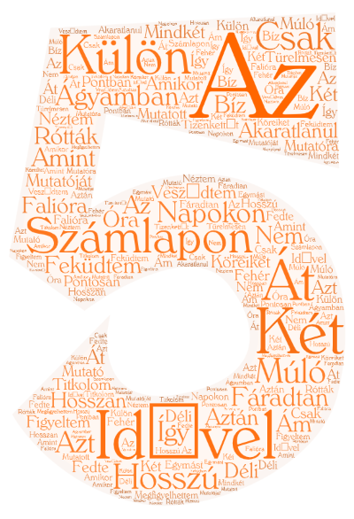
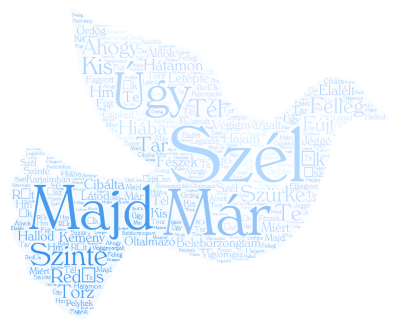
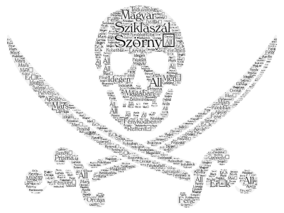
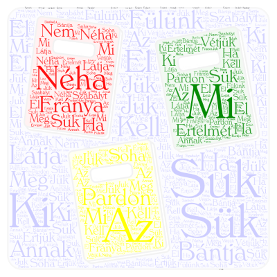

Matematika
Az ágyamban hosszú napokon át fáradtan feküdtem, akaratlanul is csak a múló idővel vesződtem. Hosszan figyeltem a falióra mindkét mutatóját, amint köreiket a számlapon külön-külön rótták. Nem titkolom! Türelmesen néztem a két mutatóra. Így idővel aztán azt is megfigyelhettem ám pontosan: amikor az óra pontban déli tizenkettőt mutatott, a két mutató bíz` egymást fedte a fehér számlapon.

Német
Ich saß mit meinem Vater daheim beim Schoppen Wein. Nie trank er - mir zuliebe ging er jetzt darauf ein. Lang war ich nicht zu Hause, bekümmert mußt ich sehn, wie er seither gealtert. Ja, ja, die Jahre gehn.

Komplex természet tudomány
Szinte beleborzongtam, ahogy a szürke felleg végignyargalt redős hátamon. Hiába, kemény a tél! Torz szél fújt, tar hajam majd letépte, úgy cibálta, oltalmazó karjaimban a kis fészek majd elalélt. Ó, te álnok ördög, hallod? Most miért vigyorogsz? Úgy csipked a szél! - Látod? Már a könnyem is jéggé fagyott! Pelyhek őrjítően keringőznek, ők legalább mulatnak. Már beleszédülök! Hm, a rőt ősz is elhagyott.

Történelem
Szörnyű sziklaszál magyar magában fényködben áll; idegen erők kirobbantottja: rettentő, fényverő, gyönyörű prisma. Merő Mars orcája fene indulatok félelmes lárvája s Apolló kilobban bozontos, dörgető, kevély kobzában.

Magyar
Az a fránya suk-sük bántja a mi fülünk. Pardon! Annak bántja, ki értelmét látja. Néha kell a suk-sük, néha meg a juk-jük. Ha a szabályt értjük, soha el nem vétjük.